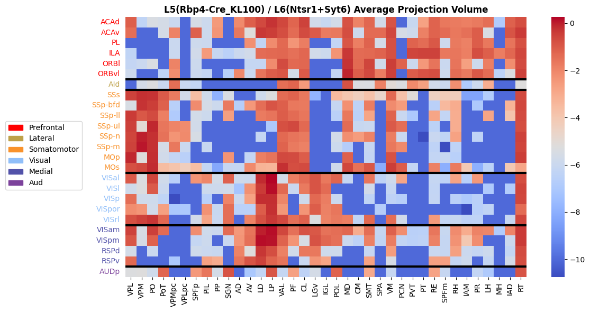
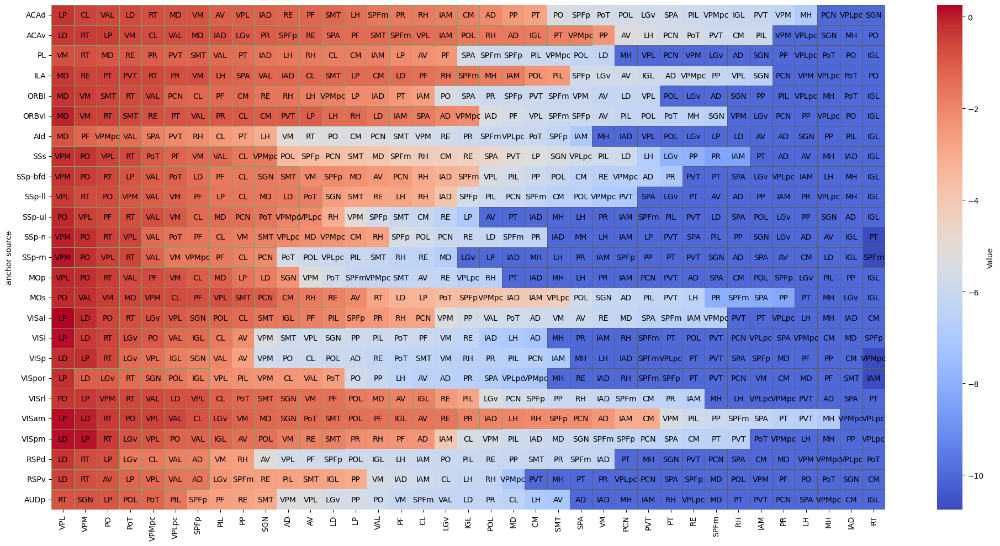
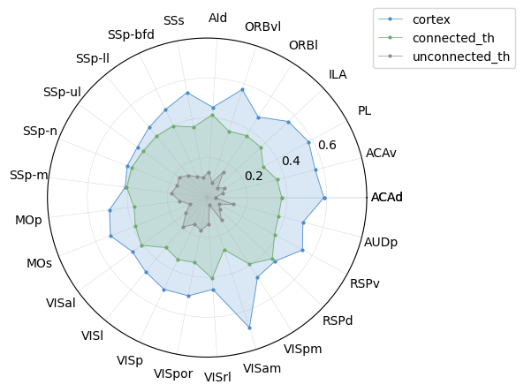
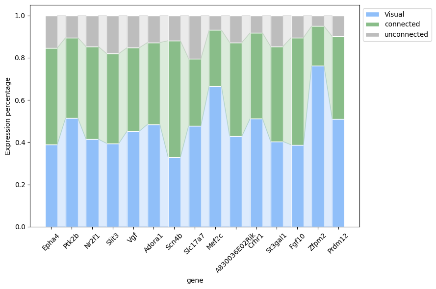
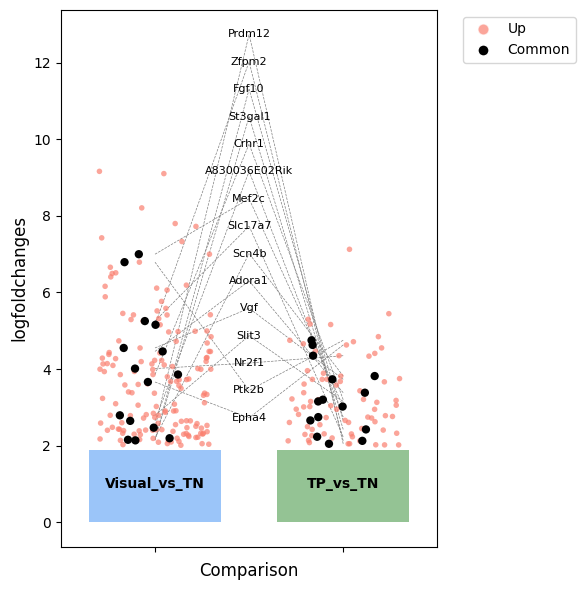

5_ctx_th_gene_analysis
[62]:
import pandas as pd
import anndata
import scanpy as sc
from tqdm import tqdm
import matplotlib.pyplot as plt
import numpy as np
import warnings
from scipy.stats import pearsonr
import seaborn as sns
import os
from matplotlib.patches import Patch
import matplotlib as mpl
mpl.rcParams['pdf.fonttype'] = 42
mpl.rcParams['ps.fonttype'] = 42
warnings.filterwarnings('ignore')
[2]:
ctx_regions = ['ACAd', 'ACAv', 'PL', 'ILA', 'ORBl', 'ORBvl', 'AId', 'SSs', 'SSp-bfd', 'SSp-ll', 'SSp-ul', 'SSp-n', 'SSp-m', 'MOp',
'MOs', 'VISal', 'VISl', 'VISp', 'VISpor', 'VISrl', 'VISam', 'VISpm', 'RSPd', 'RSPv', 'AUDp']
th_regions = ['VPL', 'VPM', 'PO', 'PoT', 'VPMpc', 'VPLpc', 'SPFp',
'MG', 'PIL', 'PP', 'SGN', 'AD', 'AV', 'LD', 'LP', 'VAL', 'PF', 'CL',
'SubG', 'LGv', 'IGL', 'POL', 'MD', 'IMD', 'CM', 'SMT',
'SPA', 'VM', 'PCN', 'PVT', 'PT', 'RE', 'SPFm', 'Xi', 'RH', 'IAM', 'PR',
'LH', 'MH', 'IAD', 'RT']
[3]:
adata_in = sc.read_h5ad('/mnt/Data16Tc/home/haichao/code/SpaCon/Data/N_20231213_zxw/mouse_3/adata_processed.h5ad')
allen_region = pd.read_csv('/mnt/Data16Tc/home/haichao/code/SpaCon/Data/N_20231213_zxw/mouse_3/allen_region.csv')
adata_in.obs['region'] = allen_region['region'].values
# add cell type
meta = pd.read_csv('/mnt/Data16Tc/home/haichao/code/SpaCon/Data/N_20231213_zxw/mouse_3/cell_metadata_with_cluster_annotation.csv')
meta = meta.set_index('cell_label')
meta = meta.loc[adata_in.obs.index.to_list()]
adata_in.obs['cell_type'] = meta['class'].to_list()
adata_in.obs
[3]:
| brain_section_label | x | y | z | x_ccf | y_ccf | z_ccf | region | cell_type | |
|---|---|---|---|---|---|---|---|---|---|
| cell_label | |||||||||
| 198904341065180396762707397604803217407 | Zhuang-ABCA-3.023 | 49.206853 | 44.877634 | 12.168155 | 4.920685 | 4.487763 | 1.216815 | SSs1 | 33 Vascular |
| 252199681526991424029643077826220097990 | Zhuang-ABCA-3.023 | 48.973992 | 44.813761 | 12.179006 | 4.897399 | 4.481376 | 1.217901 | SSs1 | 33 Vascular |
| 277720971126854564514249564750701518375 | Zhuang-ABCA-3.023 | 48.791066 | 44.577722 | 12.192707 | 4.879107 | 4.457772 | 1.219271 | SSs1 | 33 Vascular |
| 31551867344111790264292067056219852271 | Zhuang-ABCA-3.023 | 48.830489 | 44.426120 | 12.195078 | 4.883049 | 4.442612 | 1.219508 | SSs1 | 33 Vascular |
| 131102494428104399865219008178262036485 | Zhuang-ABCA-3.023 | 48.308843 | 43.028156 | 12.267879 | 4.830884 | 4.302816 | 1.226788 | SSs1 | 34 Immune |
| ... | ... | ... | ... | ... | ... | ... | ... | ... | ... |
| 318102106429791409781741726367984532777 | Zhuang-ABCA-3.009 | 131.090716 | 69.334275 | 41.436743 | 13.109072 | 6.933427 | 4.143674 | MDRNd | 30 Astro-Epen |
| 35262847161560382172299767067854387528 | Zhuang-ABCA-3.009 | 131.216032 | 69.494070 | 41.351034 | 13.121603 | 6.949407 | 4.135103 | MDRNd | 33 Vascular |
| 75415866509570969932943497000463821106 | Zhuang-ABCA-3.009 | 131.415152 | 70.764504 | 40.800403 | 13.141515 | 7.076450 | 4.080040 | sctd | 24 MY Glut |
| 12350978322417280063239916106423065862 | Zhuang-ABCA-3.009 | 131.646167 | 71.182557 | 40.595995 | 13.164617 | 7.118256 | 4.059599 | sctd | 24 MY Glut |
| 327554758863546024460748891922509519354 | Zhuang-ABCA-3.009 | 131.658892 | 71.414675 | 40.501356 | 13.165889 | 7.141468 | 4.050136 | sctd | 24 MY Glut |
1566842 rows × 9 columns
[4]:
adata_th = adata_in[adata_in.obs['region'].isin(th_regions)]
adata_th = adata_th[adata_th.obs['cell_type'].str.contains('Glut')]
adata_ctx = adata_in[adata_in.obs['region'].str.startswith(tuple(ctx_regions))]
adata_ctx = adata_ctx[adata_ctx.obs['cell_type'].str.contains('Glut')]
adata_ctx.obs
[4]:
| brain_section_label | x | y | z | x_ccf | y_ccf | z_ccf | region | cell_type | |
|---|---|---|---|---|---|---|---|---|---|
| cell_label | |||||||||
| 207252950882079766503645227815929952400 | Zhuang-ABCA-3.023 | 50.597984 | 41.393473 | 12.239274 | 5.059798 | 4.139347 | 1.223927 | SSs2/3 | 01 IT-ET Glut |
| 311894855078226645952213910865897976013 | Zhuang-ABCA-3.023 | 50.420950 | 41.271525 | 12.251970 | 5.042095 | 4.127152 | 1.225197 | SSs1 | 01 IT-ET Glut |
| 125208524519663791324346814779771999476 | Zhuang-ABCA-3.023 | 50.959183 | 43.276307 | 12.158869 | 5.095918 | 4.327631 | 1.215887 | SSs2/3 | 01 IT-ET Glut |
| 12594778395225515056477813574460470379 | Zhuang-ABCA-3.023 | 49.836112 | 42.209685 | 12.238386 | 4.983611 | 4.220968 | 1.223839 | SSs1 | 01 IT-ET Glut |
| 148621603142722639702356861951538418099 | Zhuang-ABCA-3.023 | 51.023440 | 42.722536 | 12.174236 | 5.102344 | 4.272254 | 1.217424 | SSs2/3 | 01 IT-ET Glut |
| ... | ... | ... | ... | ... | ... | ... | ... | ... | ... |
| 109907444386227227105910475953076858179 | Zhuang-ABCA-3.009 | 99.982600 | 10.826473 | 38.394998 | 9.998260 | 1.082647 | 3.839500 | VISp2/3 | 01 IT-ET Glut |
| 125697108736839342189105218784221779435 | Zhuang-ABCA-3.009 | 99.842186 | 10.515567 | 38.416597 | 9.984219 | 1.051557 | 3.841660 | VISp2/3 | 01 IT-ET Glut |
| 174685434506973661349248592409864249537 | Zhuang-ABCA-3.009 | 100.204030 | 10.343042 | 38.424450 | 10.020403 | 1.034304 | 3.842445 | VISp1 | 01 IT-ET Glut |
| 213147423751373953623065876460723241943 | Zhuang-ABCA-3.009 | 99.804367 | 10.276117 | 38.433453 | 9.980437 | 1.027612 | 3.843345 | VISp1 | 01 IT-ET Glut |
| 254117510291590640559120967821550650493 | Zhuang-ABCA-3.009 | 99.842682 | 10.830816 | 38.395274 | 9.984268 | 1.083082 | 3.839527 | VISp2/3 | 01 IT-ET Glut |
122802 rows × 9 columns
[5]:
adata = anndata.concat([adata_ctx, adata_th])
adata.obs
[5]:
| brain_section_label | x | y | z | x_ccf | y_ccf | z_ccf | region | cell_type | |
|---|---|---|---|---|---|---|---|---|---|
| cell_label | |||||||||
| 207252950882079766503645227815929952400 | Zhuang-ABCA-3.023 | 50.597984 | 41.393473 | 12.239274 | 5.059798 | 4.139347 | 1.223927 | SSs2/3 | 01 IT-ET Glut |
| 311894855078226645952213910865897976013 | Zhuang-ABCA-3.023 | 50.420950 | 41.271525 | 12.251970 | 5.042095 | 4.127152 | 1.225197 | SSs1 | 01 IT-ET Glut |
| 125208524519663791324346814779771999476 | Zhuang-ABCA-3.023 | 50.959183 | 43.276307 | 12.158869 | 5.095918 | 4.327631 | 1.215887 | SSs2/3 | 01 IT-ET Glut |
| 12594778395225515056477813574460470379 | Zhuang-ABCA-3.023 | 49.836112 | 42.209685 | 12.238386 | 4.983611 | 4.220968 | 1.223839 | SSs1 | 01 IT-ET Glut |
| 148621603142722639702356861951538418099 | Zhuang-ABCA-3.023 | 51.023440 | 42.722536 | 12.174236 | 5.102344 | 4.272254 | 1.217424 | SSs2/3 | 01 IT-ET Glut |
| ... | ... | ... | ... | ... | ... | ... | ... | ... | ... |
| 137125155786416424728071422508382942054 | Zhuang-ABCA-3.009 | 86.480430 | 34.094203 | 37.248728 | 8.648043 | 3.409420 | 3.724873 | SGN | 19 MB Glut |
| 186321231466624970722021094909324401885 | Zhuang-ABCA-3.009 | 86.443977 | 35.015822 | 37.291043 | 8.644398 | 3.501582 | 3.729104 | POL | 19 MB Glut |
| 262284519603134366801326445274337827961 | Zhuang-ABCA-3.009 | 86.388989 | 32.866518 | 37.212756 | 8.638899 | 3.286652 | 3.721276 | SGN | 19 MB Glut |
| 33608739852097367198466784523454261485 | Zhuang-ABCA-3.009 | 86.904204 | 34.752896 | 37.268567 | 8.690420 | 3.475290 | 3.726857 | POL | 19 MB Glut |
| 303385550649730012456703013017610179856 | Zhuang-ABCA-3.009 | 88.389510 | 37.024369 | 37.400811 | 8.838951 | 3.702437 | 3.740081 | POL | 19 MB Glut |
133403 rows × 9 columns
[6]:
sc.pp.normalize_total(adata, target_sum=1e4)
sc.pp.log1p(adata)
adata
[6]:
AnnData object with n_obs × n_vars = 133403 × 1122
obs: 'brain_section_label', 'x', 'y', 'z', 'x_ccf', 'y_ccf', 'z_ccf', 'region', 'cell_type'
uns: 'log1p'
ctx layer56 th correlation
L5/L6 corr
[8]:
layer = '56'
th_ctx_coorelation = pd.DataFrame(index=ctx_regions, columns=th_regions, dtype=float)
for ctx_region in tqdm(ctx_regions):
adata_ctx_area = adata[adata.obs['region'].str.startswith((ctx_region+layer[0], ctx_region+layer[-1]))]
for th_region in th_regions:
adata_th_area = adata[adata.obs['region']==th_region]
if adata_th_area.shape[0] == 0:
continue
ctx_gene = np.mean(adata_ctx_area.X.A, axis=0)
th_gene = np.mean(adata_th_area.X.A, axis=0)
corr, p_value = pearsonr(ctx_gene, th_gene)
th_ctx_coorelation.loc[ctx_region, th_region] = corr
# th_ctx_coorelation
100%|██████████| 25/25 [00:13<00:00, 1.84it/s]
[9]:
col_list = th_ctx_coorelation.columns[~th_ctx_coorelation.isna().any()].tolist()
th_ctx_coorelation = th_ctx_coorelation[col_list]
# th_ctx_coorelation
[10]:
tempdf = pd.read_excel('./data/layer56_to_th_connection_strength.xlsx', index_col=0, sheet_name=None)
Rbp4_L5 = tempdf['Sheet1']
Ntsr1_Syt6_L6 = tempdf['Sheet2']
Rbp4_L5 = Rbp4_L5.replace('TN', -10)
Rbp4_L5.loc['SSs'] = Rbp4_L5.loc[['SSs-1', 'SSs-2']].mean(axis=0)
Rbp4_L5.loc['MOs'] = Rbp4_L5.loc[['MOs-1', 'MOs-2']].mean(axis=0)
Rbp4_L5 = Rbp4_L5.drop(['SSs-1', 'SSs-2', 'MOs-1', 'MOs-2'], axis=0)
Rbp4_L5 = Rbp4_L5.loc[:, col_list]
# ctx_regions.remove("AId")
Rbp4_L5 = Rbp4_L5.loc[ctx_regions]
Ntsr1_Syt6_L6 = Ntsr1_Syt6_L6.replace('TN', -10)
Ntsr1_Syt6_L6.loc['SSs'] = Ntsr1_Syt6_L6.loc[['SSs-1', 'SSs-2']].mean(axis=0)
Ntsr1_Syt6_L6.loc['MOs'] = Ntsr1_Syt6_L6.loc[['MOs-1', 'MOs-2']].mean(axis=0)
Ntsr1_Syt6_L6 = Ntsr1_Syt6_L6.drop(['SSs-1', 'SSs-2', 'MOs-1', 'MOs-2'], axis=0)
Ntsr1_Syt6_L6 = Ntsr1_Syt6_L6.loc[:, col_list]
Ntsr1_Syt6_L6 = Ntsr1_Syt6_L6.loc[ctx_regions]
# Ntsr1_Syt6_L6
[266]:
# sns.heatmap((Rbp4_L5+Ntsr1_Syt6_L6)/2)
# Define color mapping
cluster_labels = ['Prefrontal']*6 + ['Lateral']*1 + ['Somatomotor']*8 + ['Visual']*5 + ['Medial']*4 + ['Aud']
cluster_colors = {'Prefrontal': '#ff0000', 'Lateral': '#bea149', 'Somatomotor': '#f9922b',
'Visual': '#90bff9', 'Medial': '#5252a9', 'Aud': '#7c429b'}
# Create Label Color
row_colors = pd.Series(cluster_labels).map(cluster_colors)
fig, ax = plt.subplots(figsize=(12, 6))
sns.heatmap((Rbp4_L5+Ntsr1_Syt6_L6)/2, cmap='coolwarm', ax=ax, yticklabels=False)
# Add cluster segmentation line
prev_cluster = cluster_labels[0]
for idx, label in enumerate(cluster_labels):
if label != prev_cluster:
ax.axhline(idx, color='black', linewidth=3)
prev_cluster = label
# Add row label color
idx=0
for id, label in zip(Ntsr1_Syt6_L6.index, cluster_labels):
ax.text(-0.5, idx + 0.5, id, color=cluster_colors[label], va='center', ha='right')
idx = idx+1
ax.set_ylabel('')
# Add legends
legend_handles = [Patch(color=color, label=cluster) for cluster, color in cluster_colors.items()]
ax.legend(handles=legend_handles, bbox_to_anchor=(-0.3, 0.6), loc='upper left', borderaxespad=0.)
ax.set_title('L5(Rbp4-Cre_KL100) / L6(Ntsr1+Syt6) Average Projection Volume', fontweight='bold')
plt.tight_layout()
# plt.savefig('./L56_mean_conn.pdf', format='pdf')

[184]:
connect = (Rbp4_L5+Ntsr1_Syt6_L6)/2
connect
[184]:
| VPL | VPM | PO | PoT | VPMpc | VPLpc | SPFp | PIL | PP | SGN | ... | PT | RE | SPFm | RH | IAM | PR | LH | MH | IAD | RT | |
|---|---|---|---|---|---|---|---|---|---|---|---|---|---|---|---|---|---|---|---|---|---|
| anchor source | |||||||||||||||||||||
| ACAd | -1.090171 | -6.342319 | -5.426504 | -5.605730 | -6.008217 | -10.000000 | -5.566647 | -5.895726 | -2.527515 | -10.000000 | ... | -2.727347 | -1.183582 | -1.670217 | -1.755893 | -1.809540 | -1.685012 | -1.448781 | -6.879172 | -1.144436 | -0.769605 |
| ACAv | -1.423084 | -10.000000 | -10.000000 | -5.608990 | -1.929727 | -10.000000 | -1.132599 | -5.927264 | -2.399007 | -10.000000 | ... | -1.873386 | -1.182032 | -1.403915 | -1.655801 | -1.468856 | -1.057059 | -5.430204 | -10.000000 | -0.900422 | -0.413475 |
| PL | -10.000000 | -10.000000 | -10.000000 | -10.000000 | -5.992111 | -10.000000 | -5.882870 | -5.961731 | -10.000000 | -10.000000 | ... | -1.389215 | -0.970923 | -5.878069 | -1.704030 | -1.890465 | -1.035770 | -1.639700 | -10.000000 | -1.569406 | -0.807789 |
| ILA | -6.325188 | -10.000000 | -10.000000 | -10.000000 | -6.017124 | -10.000000 | -5.751314 | -2.520655 | -6.144408 | -6.509481 | ... | -0.546665 | -0.545810 | -1.654686 | -1.603711 | -1.813752 | -0.737798 | -1.087582 | -1.804623 | -1.274479 | -0.642914 |
| ORBl | -6.224208 | -6.003722 | -5.437890 | -10.000000 | -1.905725 | -10.000000 | -5.918426 | -10.000000 | -10.000000 | -10.000000 | ... | -2.467256 | -1.554422 | -6.000569 | -1.589246 | -2.697192 | -5.901769 | -1.834357 | -10.000000 | -2.160936 | -0.693127 |
| ORBvl | -5.882161 | -10.000000 | -10.000000 | -6.375555 | -2.185265 | -10.000000 | -5.950850 | -6.211784 | -10.000000 | -6.643945 | ... | -0.828830 | -0.776871 | -5.913809 | -1.420968 | -1.698088 | -0.956903 | -1.414943 | -6.478384 | -5.357311 | -0.545583 |
| AId | -10.000000 | -5.641845 | -5.325552 | -6.050576 | -1.452111 | -6.043647 | -6.252712 | -10.000000 | -10.000000 | -10.000000 | ... | -2.700659 | -5.744953 | -5.990823 | -2.209329 | -6.914940 | -5.937606 | -3.096440 | -10.000000 | -10.000000 | -5.233617 |
| SSs | -0.533973 | -0.245893 | -0.284354 | -1.007490 | -1.754370 | -5.729620 | -3.632334 | -5.785201 | -7.888268 | -5.437407 | ... | -10.000000 | -4.436421 | -4.193741 | -4.288500 | -8.377699 | -8.356392 | -6.792026 | -10.000000 | -10.000000 | -0.683757 |
| SSp-bfd | -5.483834 | -0.286921 | -0.440568 | -1.150783 | -6.616602 | -10.000000 | -2.125942 | -5.626288 | -5.918936 | -1.722711 | ... | -10.000000 | -6.576067 | -3.461558 | -3.051209 | -10.000000 | -6.952895 | -10.000000 | -10.000000 | -3.256035 | -0.630895 |
| SSp-ll | -0.424806 | -0.984444 | -0.714249 | -1.830208 | -6.880859 | -10.000000 | -5.680297 | -5.937618 | -10.000000 | -2.661697 | ... | -10.000000 | -2.811056 | -6.272099 | -3.059279 | -10.000000 | -10.000000 | -2.820684 | -10.000000 | -3.891500 | -0.704974 |
| SSp-ul | -0.512134 | -4.997219 | -0.126221 | -1.606216 | -1.955906 | -2.141609 | -5.729040 | -10.000000 | -10.000000 | -10.000000 | ... | -10.000000 | -6.455041 | -10.000000 | -3.065086 | -10.000000 | -10.000000 | -10.000000 | -10.000000 | -10.000000 | -0.765330 |
| SSp-n | -0.563616 | -0.029009 | -0.229639 | -1.545879 | -2.328005 | -2.089110 | -5.543640 | -10.000000 | -10.000000 | -10.000000 | ... | -10.754420 | -6.051322 | -6.353382 | -2.713103 | -10.000000 | -6.398222 | -10.000000 | -10.000000 | -10.000000 | -0.544709 |
| SSp-m | -0.538166 | 0.065971 | -0.230394 | -5.600657 | -1.676116 | -6.019576 | -10.000000 | -6.087167 | -10.000000 | -10.000000 | ... | -10.000000 | -6.391604 | -10.754420 | -6.380348 | -10.000000 | -10.000000 | -10.000000 | -10.000000 | -10.000000 | -0.589138 |
| MOp | -0.129938 | -5.183974 | -0.205113 | -5.752578 | -6.204141 | -6.578336 | -10.000000 | -10.000000 | -10.000000 | -2.334184 | ... | -10.000000 | -6.272292 | -6.135587 | -6.590445 | -10.000000 | -10.000000 | -10.000000 | -10.000000 | -10.000000 | -0.459391 |
| MOs | -0.818288 | -0.664884 | -0.153652 | -3.602665 | -3.845986 | -4.315142 | -3.629701 | -6.234426 | -8.224540 | -6.119077 | ... | -10.000000 | -1.882719 | -8.014224 | -1.730154 | -4.054899 | -7.984730 | -6.475172 | -10.000000 | -4.038434 | -2.843340 |
| VISal | -1.034583 | -5.354679 | -0.599560 | -5.774497 | -6.619113 | -10.000000 | -2.364640 | -1.993791 | -5.664126 | -1.134140 | ... | -10.000000 | -6.173552 | -6.443739 | -2.782023 | -6.598952 | -2.466052 | -10.000000 | -10.000000 | -10.000000 | -0.740894 |
| VISl | -5.777306 | -5.321867 | -1.004276 | -5.966014 | -10.000000 | -10.000000 | -10.000000 | -5.907370 | -5.862698 | -5.799969 | ... | -10.000000 | -6.257293 | -10.000000 | -10.000000 | -10.000000 | -10.000000 | -6.888282 | -10.000000 | -6.836267 | -0.577579 |
| VISp | -1.422962 | -5.804932 | -5.833879 | -6.346772 | -10.754420 | -10.000000 | -10.000000 | -6.621287 | -10.000000 | -1.955335 | ... | -10.000000 | -6.214321 | -10.000000 | -6.558477 | -6.892084 | -6.579267 | -10.000000 | -10.000000 | -10.000000 | -0.617637 |
| VISpor | -2.192462 | -2.376547 | -5.726122 | -2.671269 | -7.021998 | -7.002497 | -10.000000 | -2.298210 | -6.092443 | -1.422456 | ... | -10.000000 | -10.000000 | -10.000000 | -10.000000 | -10.754420 | -6.612503 | -6.340301 | -10.000000 | -10.000000 | -1.387643 |
| VISrl | -0.791890 | -0.535124 | -0.339014 | -1.277799 | -10.000000 | -10.000000 | -5.761978 | -2.823176 | -6.031412 | -1.422637 | ... | -10.000000 | -2.532333 | -6.264313 | -6.090899 | -6.429685 | -6.377060 | -10.000000 | -10.000000 | -6.126003 | -0.644216 |
| VISam | -0.527118 | -5.517881 | -0.478789 | -1.373619 | -10.000000 | -10.000000 | -2.186025 | -5.816067 | -5.942121 | -1.356229 | ... | -6.514253 | -1.600301 | -6.087990 | -2.147693 | -3.042415 | -1.905533 | -2.012084 | -6.859115 | -1.975844 | -0.398044 |
| VISpm | -0.916817 | -5.587206 | -1.151516 | -10.000000 | -10.000000 | -10.000000 | -6.169564 | -5.918708 | -10.000000 | -6.051864 | ... | -6.427577 | -1.872311 | -6.168127 | -2.308679 | -4.021444 | -2.168330 | -10.000000 | -10.000000 | -5.965749 | -0.397564 |
| RSPd | -5.670737 | -10.000000 | -5.986022 | -10.000000 | -10.000000 | -10.000000 | -5.812420 | -5.987416 | -6.104530 | -10.000000 | ... | -10.000000 | -6.027620 | -6.161968 | -2.701966 | -5.965488 | -6.153988 | -5.932982 | -10.000000 | -6.228290 | -0.731420 |
| RSPv | -1.311758 | -10.000000 | -10.000000 | -10.000000 | -7.055145 | -10.000000 | -10.000000 | -2.714168 | -3.050242 | -10.000000 | ... | -10.000000 | -2.677701 | -2.675464 | -6.199900 | -5.892359 | -10.000000 | -6.172558 | -10.000000 | -5.758051 | -0.739684 |
| AUDp | -5.334003 | -5.230048 | -5.778810 | -1.208616 | -10.000000 | -10.000000 | -2.475106 | -1.604605 | -5.675994 | -0.896259 | ... | -10.000000 | -2.779426 | -6.144770 | -10.000000 | -10.000000 | -6.260222 | -6.894197 | -10.000000 | -10.000000 | -0.885349 |
25 rows × 37 columns
[206]:
data = connect
# Sort each line and get the name after sorting
sorted_columns = data.apply(lambda x: x.sort_values(ascending=False).index.tolist(), axis=1)
# Create a new DataFrame, which contains sorted data
sorted_data = pd.DataFrame(index=data.index, columns=data.columns)
for i, row in enumerate(sorted_columns):
sorted_data.iloc[i] = data.loc[data.index[i], row].values
# Make sure all the values in sorted_data are numerical types
sorted_data = sorted_data.astype(float)
# Create a DataFrame with the same shape as sorted data, which is used to store the name
annotation_data = pd.DataFrame(sorted_columns.tolist(), index=data.index, columns=data.columns)
# Draw a hot picture
plt.figure(figsize=(20, 10))
ax = sns.heatmap(sorted_data, annot=annotation_data, fmt='', cmap='coolwarm', cbar_kws={'label': 'Value'}, annot_kws={'color': 'black'})
# Add white border
from matplotlib.patches import Rectangle
for i, row in enumerate(sorted_data.values):
for j, value in enumerate(row):
if value > -2 or value <= -10:
color = '#6bad6b' if value > -2 else '#5d5d5d'
rect = Rectangle((j, i), 1, 1, fill=False, edgecolor=color, lw=0.6)
ax.add_patch(rect)
# Adjust the layout
plt.tight_layout()
# plt.savefig('./L56_tp_tn_conn.pdf', format='pdf')

gene anasys
25 ctx area
[62]:
ctx_region_order = ['ACAd', 'ACAv', 'PL', 'ILA', 'ORBl', 'ORBvl', 'AId', 'SSs', 'SSp-bfd', 'SSp-ll', 'SSp-ul', 'SSp-n', 'SSp-m', 'MOp', 'MOs', 'VISal', 'VISl', 'VISp', 'VISpor', 'VISrl', 'VISam', 'VISpm', 'RSPd', 'RSPv', 'AUDp']
[ ]:
th_tp = {}
th_tn = {}
for c in ctx_region_order:
tmp = connect.loc[c]
th_tp[c] = tmp[tmp>-2].index.tolist()
th_tn[c] = tmp[tmp==-10].index.tolist()
[230]:
ctx_gene_exp_list = []
tp_gene_exp_list = []
tn_gene_exp_list = []
gene_dict = {}
for area in tqdm(ctx_region_order):
adata.obs['deg'] = 'nan'
adata.obs.loc[adata.obs['region'].str.startswith((area+'5', area+'6')), 'deg'] = area
adata.obs.loc[adata.obs['region'].isin(th_tp[area]), 'deg'] = 'connected'
adata.obs.loc[adata.obs['region'].isin(th_tn[area]), 'deg'] = 'unconnected'
adata_sel = adata[adata.obs['deg'] != 'nan']
# ctx vs unconnected
sc.tl.rank_genes_groups(adata_sel, 'deg', groups=[area], reference='unconnected', method='wilcoxon')
a_vs_c = sc.get.rank_genes_groups_df(adata_sel, group=area)
# connected vs unconnected
sc.tl.rank_genes_groups(adata_sel, 'deg', groups=['connected'], reference='unconnected', method='wilcoxon')
b_vs_c = sc.get.rank_genes_groups_df(adata_sel, group='connected')
# Find out the gene of the expression closer to ctx in connected
similar_genes = []
for gene in b_vs_c['names']:
if gene in a_vs_c['names'].values:
a_logfc = a_vs_c[a_vs_c['names'] == gene]['logfoldchanges'].values[0]
b_logfc = b_vs_c[b_vs_c['names'] == gene]['logfoldchanges'].values[0]
if np.sign(a_logfc) == np.sign(b_logfc) and a_logfc > 2 and b_logfc > 2:
similar_genes.append(gene)
gene_dict[area] = similar_genes
if len(similar_genes) == 0:
print(area)
adata_sel_ctx = adata_sel[adata_sel.obs['deg'] == area]
adata_sel_tp = adata_sel[adata_sel.obs['deg'] == 'connected']
adata_sel_tn = adata_sel[adata_sel.obs['deg'] == 'unconnected']
# Calculate the average expression
ctx_mean = adata_sel_ctx[:, similar_genes].X.A.mean(axis=0)
tp_mean = adata_sel_tp[:, similar_genes].X.A.mean(axis=0)
tn_mean = adata_sel_tn[:, similar_genes].X.A.mean(axis=0)
# Sum of calculations
total_mean = ctx_mean + tp_mean + tn_mean
# Calculation ratio
ctx_proportion = ctx_mean / total_mean
tp_proportion = tp_mean / total_mean
tn_proportion = tn_mean / total_mean
ctx_gene_exp_list.append(ctx_proportion)
tp_gene_exp_list.append(tp_proportion)
tn_gene_exp_list.append(tn_proportion)
100%|██████████| 25/25 [00:35<00:00, 1.42s/it]
[ ]:
df_tp_vs_tn = pd.DataFrame(dict([(k, pd.Series(v)) for k, v in gene_dict.items()]))
df_tp_vs_tn
[212]:
def merge_lists(original_list, group_sizes):
merged_list = []
start = 0
for size in group_sizes:
end = start + size
group = original_list[start:end]
if group:
merged_group = np.concatenate(group, axis=0)
merged_list.append(merged_group)
start = end
return merged_list
# Definition group size
group_sizes = [6, 1, 8, 5, 4, 1]
# Merge list
merged_tn = merge_lists(tn_gene_exp_list, group_sizes)
merged_tp = merge_lists(tp_gene_exp_list, group_sizes)
merged_ctx = merge_lists(ctx_gene_exp_list, group_sizes)
# len(merged_tn)
categories = ['Prefrontal', 'Lateral', 'Somatomotor', 'Visual', 'Medial', 'Aud']
experiments = ['connected', 'unconnected', 'cortex']
experiments_data = [merged_tp, merged_tn, merged_ctx]
data = []
for exp_name, experiment in zip(experiments, experiments_data):
for category, values in zip(categories, experiment):
for value in values:
data.append({
'Experiment': exp_name,
'Category': category,
'Value': value
})
df = pd.DataFrame(data)
custom_palette = {
'cortex': '#478ccf',
'connected': '#6bad6b',
'unconnected': '#8d8d8d'
}
custom_markers = {
# 'cortex': 'D',
'connected': 'o',
'unconnected': 's'
}
plt.figure(figsize=(10,5))
sns.lineplot(data=df, x='Category', y='Value', hue='Experiment', marker='o', palette=custom_palette, dashes=False, linewidth=0.5, markersize=6)
plt.xlabel('ctx_module')
plt.ylabel('percentage')
plt.legend(bbox_to_anchor=(0.3, 1))
plt.tight_layout()
# plt.savefig('./stereo_L56_Moudel_tp_tn_compare_line_gene.pdf', format='pdf')
[ ]:
ctx_gene_exp_percent = [i.mean() for i in ctx_gene_exp_list]
tp_gene_exp_percent = [i.mean() for i in tp_gene_exp_list]
tn_gene_exp_percent = [i.mean() for i in tn_gene_exp_list]
[232]:
feature = ctx_region_order
value1 = ctx_gene_exp_percent
value2 = tp_gene_exp_percent
value3 = tn_gene_exp_percent
N = len(ctx_gene_exp_list)
# Set the angle of the radar diagram to cut a round surface in a flat separation
angles=np.linspace(0, 2*np.pi, N, endpoint=False)
# In order to close the radar map, the following steps need
value1=np.concatenate((value1,[value1[0]]))
value2=np.concatenate((value2,[value2[0]]))
value3=np.concatenate((value3,[value3[0]]))
angles=np.concatenate((angles,[angles[0]]))
feature = np.concatenate((feature, [feature[0]]))
fig=plt.figure(figsize=(6,6))
ax = fig.add_subplot(111, polar=True)
# Draw a line map
ax.plot(angles, value1, 'o-', markersize=2, linewidth=0.5, label = 'cortex', color='#478ccf')
# Fill color
ax.fill(angles, value1, alpha=0.2, color='#478ccf')
# Draw the second folding drawing
ax.plot(angles, value2, 'o-', markersize=2, linewidth=0.5, label = 'connected_th', color='#6bad6b')
ax.fill(angles, value2, alpha=0.2, color='#6bad6b')
# Draw a line map
ax.plot(angles, value3, 'o-', markersize=2, linewidth=0.5, label = 'unconnected_th', color='#8d8d8d')
# Fill color
ax.fill(angles, value3, alpha=0.2, color='#8d8d8d')
# Add the tags of each feature
# ax.set_thetagrids(angles * 180/np.pi, feature)
ax.set_thetagrids(angles * 180/np.pi, feature) # FRAC parameter setting label distance MAX ( *TP, *TN)+0.05 to depart the center
ax.tick_params(axis='x', pad=6) # Set the distance between the label and the axis
# Set the range of radar chart
# ax.set_ylim(0.25, 0.45)
# Add title
# plt.title(f'Layer5/6_CTX_in & TH_in', fontweight='bold')
# Add grid line
# ax.grid(True)
ax.grid(True, linewidth=0.25, alpha=0.7)
# ax.set_rgrids([0, 0.2, 0.4, 0.6, 0.8], labels=['', '0.2', '0.4', '0.6', ''])
# Set diagram
plt.legend(loc='center left', bbox_to_anchor=(1, 1))
plt.tight_layout()
# plt.savefig('./stereo_l56_module_ave_exp_radar_plot_gene.pdf', format='pdf')

6 module
[63]:
ctx_module = {'Prefrontal': ['ACAd', 'ACAv', 'PL', 'ILA', 'ORBl', 'ORBvl'], 'Lateral': ['AId'], 'Somatomotor' :['SSs', 'SSp-bfd', 'SSp-ll', 'SSp-ul', 'SSp-n', 'SSp-m', 'MOp', 'MOs'],
'Visual': ['VISal', 'VISl', 'VISp', 'VISpor', 'VISrl'], 'Medial': ['VISam', 'VISpm', 'RSPd', 'RSPv'], 'Aud': ['AUDp']}
th_tp_module = {}
th_tn_module = {}
# Iterate through each context region
for i, c in enumerate(ctx_module.keys()):
# Create a temporary DataFrame for each region
if layer == '5':
tmp = Rbp4_L5.loc[ctx_module[c]].values.flatten()
elif layer == '6':
tmp = Ntsr1_Syt6_L6.loc[ctx_module[c]].values.flatten()
elif layer == '56':
connect = (Rbp4_L5+Ntsr1_Syt6_L6)/2
tmp = connect.loc[ctx_module[c]]
column_means = tmp.mean()
# Find the index with the largest five columns on average
top_5_columns = column_means.nlargest(5).index.tolist()
th_tp_module[c] = top_5_columns
bottom_5_columns = column_means.nsmallest(5).index.tolist()
th_tn_module[c] = bottom_5_columns
th_tp_module
[63]:
{'Prefrontal': ['MD', 'RT', 'VM', 'VAL', 'RE'],
'Lateral': ['MD', 'PF', 'VPMpc', 'VAL', 'SPA'],
'Somatomotor': ['PO', 'RT', 'VAL', 'VPL', 'PF'],
'Visual': ['LP', 'LD', 'RT', 'IGL', 'LGv'],
'Medial': ['LD', 'LP', 'RT', 'VAL', 'LGv'],
'Aud': ['RT', 'SGN', 'LP', 'POL', 'PoT']}
[64]:
module_color={'Prefrontal': '#ff0000',
'Lateral': '#ffff66',
'Somatomotor': '#f9922b',
'Visual': '#90bff9',
'Medial': '#5252a9',
'Aud': '#7c429b'}
[71]:
adata.obs['deg'] = 'nan'
area = 'Visual'
area5 = [i+'5' for i in ctx_module[area]]
area6 = [i+'6' for i in ctx_module[area]]
area56 = area5 + area6
adata.obs.loc[adata.obs['region'].str.startswith(tuple(area56)), 'deg'] = area
# adata.obs.loc[adata.obs['region'].str.startswith(tuple(ctx_module[area])), 'deg'] = area
adata.obs.loc[adata.obs['region'].isin(th_tp_module[area]), 'deg'] = 'connected'
adata.obs.loc[adata.obs['region'].isin(th_tn_module[area]), 'deg'] = 'unconnected'
adata.obs
[71]:
| brain_section_label | x | y | z | x_ccf | y_ccf | z_ccf | region | cell_type | deg | |
|---|---|---|---|---|---|---|---|---|---|---|
| cell_label | ||||||||||
| 207252950882079766503645227815929952400 | Zhuang-ABCA-3.023 | 50.597984 | 41.393473 | 12.239274 | 5.059798 | 4.139347 | 1.223927 | SSs2/3 | 01 IT-ET Glut | nan |
| 311894855078226645952213910865897976013 | Zhuang-ABCA-3.023 | 50.420950 | 41.271525 | 12.251970 | 5.042095 | 4.127152 | 1.225197 | SSs1 | 01 IT-ET Glut | nan |
| 125208524519663791324346814779771999476 | Zhuang-ABCA-3.023 | 50.959183 | 43.276307 | 12.158869 | 5.095918 | 4.327631 | 1.215887 | SSs2/3 | 01 IT-ET Glut | nan |
| 12594778395225515056477813574460470379 | Zhuang-ABCA-3.023 | 49.836112 | 42.209685 | 12.238386 | 4.983611 | 4.220968 | 1.223839 | SSs1 | 01 IT-ET Glut | nan |
| 148621603142722639702356861951538418099 | Zhuang-ABCA-3.023 | 51.023440 | 42.722536 | 12.174236 | 5.102344 | 4.272254 | 1.217424 | SSs2/3 | 01 IT-ET Glut | nan |
| ... | ... | ... | ... | ... | ... | ... | ... | ... | ... | ... |
| 137125155786416424728071422508382942054 | Zhuang-ABCA-3.009 | 86.480430 | 34.094203 | 37.248728 | 8.648043 | 3.409420 | 3.724873 | SGN | 19 MB Glut | nan |
| 186321231466624970722021094909324401885 | Zhuang-ABCA-3.009 | 86.443977 | 35.015822 | 37.291043 | 8.644398 | 3.501582 | 3.729104 | POL | 19 MB Glut | nan |
| 262284519603134366801326445274337827961 | Zhuang-ABCA-3.009 | 86.388989 | 32.866518 | 37.212756 | 8.638899 | 3.286652 | 3.721276 | SGN | 19 MB Glut | nan |
| 33608739852097367198466784523454261485 | Zhuang-ABCA-3.009 | 86.904204 | 34.752896 | 37.268567 | 8.690420 | 3.475290 | 3.726857 | POL | 19 MB Glut | nan |
| 303385550649730012456703013017610179856 | Zhuang-ABCA-3.009 | 88.389510 | 37.024369 | 37.400811 | 8.838951 | 3.702437 | 3.740081 | POL | 19 MB Glut | nan |
133403 rows × 10 columns
[72]:
adata_sel = adata[adata.obs['deg'] != 'nan']
adata_sel.obs
[72]:
| brain_section_label | x | y | z | x_ccf | y_ccf | z_ccf | region | cell_type | deg | |
|---|---|---|---|---|---|---|---|---|---|---|
| cell_label | ||||||||||
| 188052700459908704250468015984246340174 | Zhuang-ABCA-3.017 | 78.511319 | 17.025034 | 23.450480 | 7.851132 | 1.702503 | 2.345048 | VISrl5 | 01 IT-ET Glut | Visual |
| 244536282695664703731093924351585311804 | Zhuang-ABCA-3.017 | 78.839495 | 17.453570 | 23.457475 | 7.883949 | 1.745357 | 2.345747 | VISrl5 | 01 IT-ET Glut | Visual |
| 207737713088111645489974231015219723398 | Zhuang-ABCA-3.017 | 78.672275 | 18.071984 | 23.473123 | 7.867227 | 1.807198 | 2.347312 | VISrl6a | 01 IT-ET Glut | Visual |
| 282030992965481098907637606735824510623 | Zhuang-ABCA-3.017 | 78.575583 | 19.064710 | 23.497188 | 7.857558 | 1.906471 | 2.349719 | VISal6a | 02 NP-CT-L6b Glut | Visual |
| 97661006042925800380741778764498794751 | Zhuang-ABCA-3.017 | 78.796093 | 19.073735 | 23.494524 | 7.879609 | 1.907373 | 2.349452 | VISal6a | 02 NP-CT-L6b Glut | Visual |
| ... | ... | ... | ... | ... | ... | ... | ... | ... | ... | ... |
| 156947303650960194776993747274328011056 | Zhuang-ABCA-3.009 | 84.812512 | 30.863025 | 37.253313 | 8.481251 | 3.086302 | 3.725331 | LP | 18 TH Glut | connected |
| 172268668275251998778345610664715788667 | Zhuang-ABCA-3.009 | 84.008563 | 33.037907 | 37.280443 | 8.400856 | 3.303791 | 3.728044 | LP | 18 TH Glut | connected |
| 248145458296088509137955235524055794146 | Zhuang-ABCA-3.009 | 84.917639 | 32.177712 | 37.243865 | 8.491764 | 3.217771 | 3.724386 | LP | 18 TH Glut | connected |
| 27966221641202106948948402442419133181 | Zhuang-ABCA-3.009 | 84.392370 | 32.908652 | 37.267710 | 8.439237 | 3.290865 | 3.726771 | LP | 18 TH Glut | connected |
| 7071071614544513006737101022316271447 | Zhuang-ABCA-3.009 | 83.936955 | 31.485775 | 37.276005 | 8.393695 | 3.148577 | 3.727601 | LP | 18 TH Glut | connected |
9473 rows × 10 columns
[75]:
sc.tl.rank_genes_groups(adata_sel, 'deg', groups=[area], reference='unconnected', method='wilcoxon')
a_vs_c = sc.get.rank_genes_groups_df(adata_sel, group=area)
sc.tl.rank_genes_groups(adata_sel, 'deg', groups=['connected'], reference='unconnected', method='wilcoxon')
b_vs_c = sc.get.rank_genes_groups_df(adata_sel, group='connected')
[ ]:
similar_genes = []
for gene in b_vs_c['names']:
if gene in a_vs_c['names'].values:
a_logfc = a_vs_c[a_vs_c['names'] == gene]['logfoldchanges'].values[0]
b_logfc = b_vs_c[b_vs_c['names'] == gene]['logfoldchanges'].values[0]
# if np.sign(a_logfc) == np.sign(b_logfc) and abs(a_logfc - b_logfc) < 0.4 and a_logfc>2 and b_logfc>2:
if np.sign(a_logfc) == np.sign(b_logfc) and a_logfc > 2 and b_logfc > 2:
similar_genes.append(gene)
print(f"similar_genes: {len(similar_genes)}")
print(similar_genes)
[80]:
# Set data
df = adata_sel[:, similar_genes].to_df()
df['cluster'] = adata_sel.obs['deg'].values
df_mean = df.groupby('cluster').mean()
# For every column
column_sums = df_mean.sum()
# The value of each column is removed to the corresponding sum
df_percentage = df_mean.div(column_sums)
df_percentage = df_percentage.loc[[area, 'connected', 'unconnected']]
categories = similar_genes
colors = [module_color[area],'#89bd89', '#bdbdbd']
labels = [area, 'connected', 'unconnected'] # Tags corresponding to color
data = df_percentage.values
# Create a chart
fig, ax = plt.subplots(figsize=(9, 6))
# Draw a stack of stacks
x = np.arange(len(categories))
bottom = np.zeros(len(categories))
width=0.6
for i, row in enumerate(data):
ax.bar(x, row, bottom=bottom, color=colors[i], edgecolor='white',width=width, label=labels[i])
bottom += row
# Add full -coverage ribbon
for j in range(len(categories) - 1):
left = x[j]+width/2
right = x[j+1]-width/2
left_data = data[:, j]
right_data = data[:, j+1]
left_cumsum = np.cumsum(left_data)
right_cumsum = np.cumsum(right_data)
# Add all ribbons from the bottom to the top
for i in range(len(colors)):
left_bottom = left_cumsum[i-1] if i > 0 else 0
left_top = left_cumsum[i]
right_bottom = right_cumsum[i-1] if i > 0 else 0
right_top = right_cumsum[i]
ax.fill([left, right, right, left],
[left_bottom, right_bottom, right_top, left_top],
color=colors[i], alpha=0.3)
ax.legend(loc='upper left', bbox_to_anchor=(1, 1)) # Figure placed on the outside of the upper right corner
# Set chart style
# ax.set_title('Full Coverage Ribbon Stacked Bar Chart')
ax.set_xlabel('gene')
ax.set_ylabel('Expression percentage')
plt.xticks(x, rotation=45)
ax.set_xticklabels(categories)
plt.tight_layout()
# plt.savefig(f'./Supp_fig/tp_tn_gene_deg_{area}.pdf', format='pdf')

[37]:
gene_path = f'./gene/{area}/'
os.makedirs(gene_path, exist_ok=True)
[82]:
a_vs_c['comparison'] = f'{area}_vs_TN'
b_vs_c['comparison'] = 'TP_vs_TN'
df = pd.concat([a_vs_c, b_vs_c])
df['regulation'] = df['logfoldchanges'].apply(lambda x: 'Up' if x > 0 else 'Down')
df = df[df['logfoldchanges'] > 2]
genes_to_label = similar_genes
comparisons = [f'{area}_vs_TN', 'TP_vs_TN']
# Create graphics and coordinate shafts
fig, ax = plt.subplots(figsize=(6, 6))
# Use Seaborn's Stripplot function
ax = sns.stripplot(x='comparison', y='logfoldchanges', hue='regulation', data=df,
jitter=0.3, size=4, palette={'Up': '#fa7f6f', 'Down': '#82b0d2'}, alpha=0.7, orient='v')
sns.stripplot(x='comparison', y='logfoldchanges', data=df[df['names'].isin(genes_to_label)],
jitter=0.2, size=6, color='black', alpha=1, ax=ax, orient='v')
# Add notes and tags
label_x = 0.5 #The X coordinate of the label (in the middle of the two groups of scattered dots)
label_offset = 0.1 # Vertical spacing between labels
max_y = df['logfoldchanges'].max()
min_y = df['logfoldchanges'].min()
label_y_range = max_y - min_y
label_y_start = min_y + label_y_range * 0.1 # Start the label from the position of 10%of the Y axis
for i, gene in enumerate(genes_to_label):
gene_data = df[df['names'] == gene]
label_y = label_y_start + i * label_offset * label_y_range
for j, comp in enumerate(comparisons):
if not gene_data[gene_data['comparison'] == comp].empty:
x = j
y = gene_data[gene_data['comparison'] == comp]['logfoldchanges'].values[0]
ax.plot([x, label_x], [y, label_y], color='gray', linestyle='--', linewidth=0.5)
ax.text(label_x, label_y, gene, fontsize=8, ha='center', va='center')
# Set diagram
from matplotlib.lines import Line2D
legend_elements = [
Line2D([0], [0], marker='o', color='w', label='Up', markersize=8, markerfacecolor='#fa7f6f', alpha=0.7),
# Line2D([0], [0], marker='o', color='w', label='Down', markersize=8, markerfacecolor='#82b0d2', alpha=0.7),
Line2D([0], [0], marker='o', color='w', label='Common', markersize=8, markerfacecolor='black', alpha=1)
]
ax.legend(handles=legend_elements, title='', bbox_to_anchor=(1.05, 1), loc='upper left')
# plt.axhline(y=2, color='black', linestyle='--', linewidth=2, alpha=0.7, zorder=11)
# Set the title and label
plt.xlabel('Comparison', fontsize=12)
plt.ylabel('logfoldchanges', fontsize=12)
# Add a box with a comparative name
width = 0.7 # width
height = 1.9 # high
x_offset = -width/2 # Adjust the X offset to maintain the center
y_offset = 0 # Adjust Y offset to keep in the middle
cm=[module_color[area], '#89bd89']
for i, comp in enumerate(comparisons):
rect = plt.Rectangle((i+x_offset, y_offset), width, height, fill=True, facecolor=cm[i], alpha=0.9, zorder=10)
ax.add_patch(rect)
ax.text(i, 1, comp, ha='center', va='center', fontweight='bold', color='black', zorder=11)
# Remove the X -axis tag
ax.set_xticklabels([])
# Adjust the range of the X -axis and leave space for the middle label
plt.xlim(-0.5, len(comparisons) - 0.5)
# 调整图的布局
plt.tight_layout()
# plt.savefig(gene_path + 'tp_tn_gene_deg.pdf', format='pdf')
